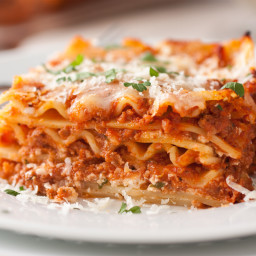

STINK GOOSE LASAGNA

CHEESY LASANGA
- 1 pound lean ground beef
- 1 jar spaghetti sauce
- cottage cheese
- 2 eggs
- parmesan cheese
- parsley
- salt and pepper
- lasagna noodles
Steps
- Step 1
In a large skillet over medium heat brown the ground beef.
Drain the grease. Add spaghetti sauce and simmer for 5 minutes.
- Step 2
In a large bowl, mix together the cottage cheese,
2 cups of the mozzarella cheese, eggs, half of the grated Parmesan cheese,
dried parsley, salt and ground black pepper.
- Step 3
To assemble, in the bottom of a 9x13 inch baking dish evenly
spread 3/4 cup of the sauce mixture. Cover with 3 uncooked
lasagna noodles, 1 3/4 cup of the cheese mixture, and
1/4 cup sauce. Repeat layers once more: top with 3 noodles,
remaining sauce, remaining mozzarella and Parmesan cheese.
Add 1/2 cup water to the edges of the pan. Cover with aluminum foil.
- Step 4
Bake in a preheated 350 degree F(175 degrees C) oven for 45 minutes.
Uncover and bake an additional 10 minutes. Let stand 10 minutes before serving.